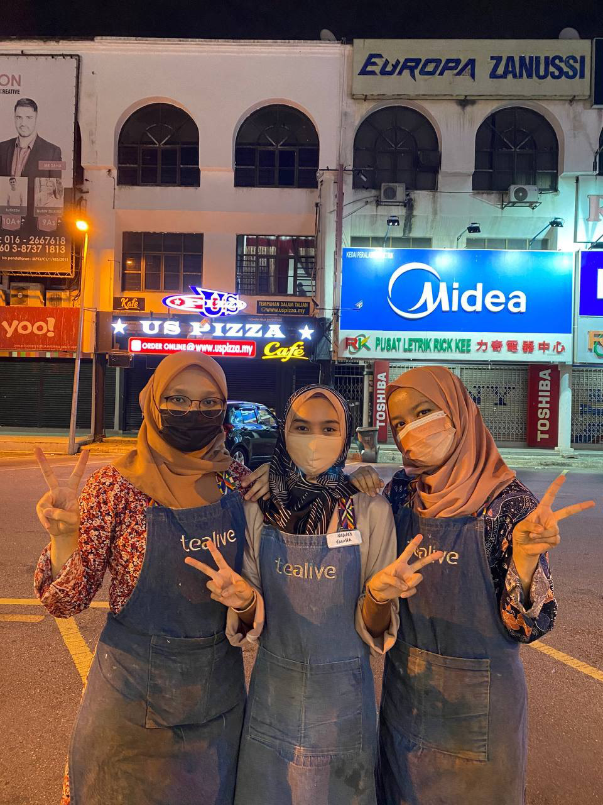
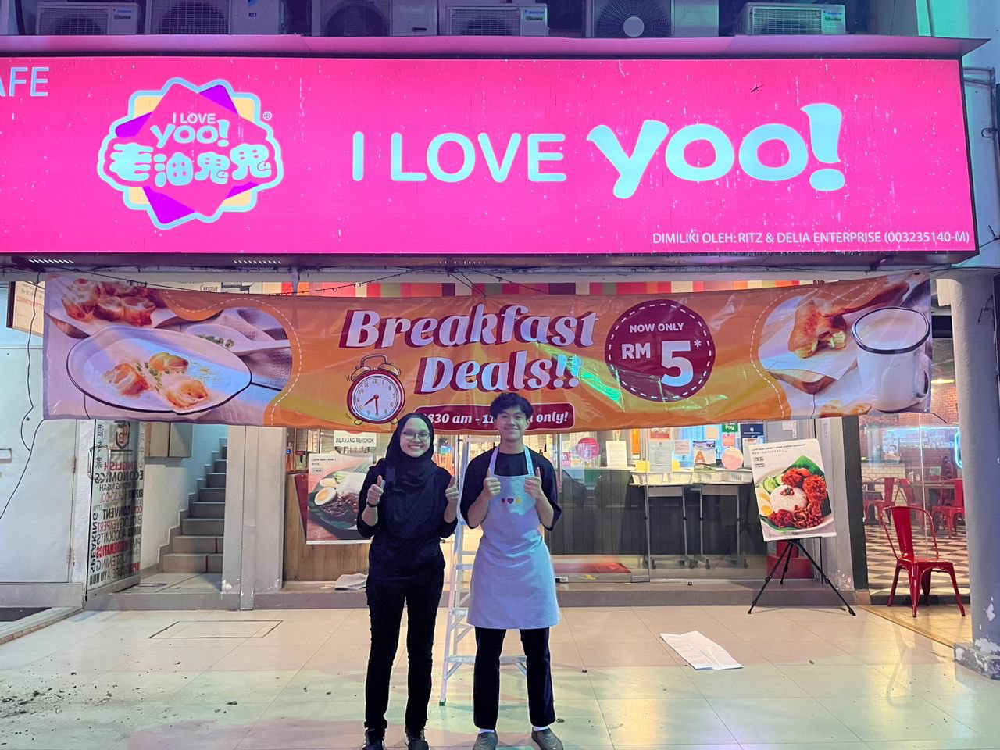

TEARISTA
Tearista at Tealive company was my first job. I managed to worked here 2 years. Work as a tearista in food and beverage section was really challenging. It is because you must have a variety skills such as communication, multitask and problem solving. I learn so much exprience while working here yet still managed to being a full timer student at UITM Kampus Machang.
FOOD HANDLING COURSE
A food handling course teaches individuals the proper methods for storing, preparing, and serving food in order to prevent food-borne illness. It covers topics such as food safety regulations, personal hygiene, and cross-contamination prevention.It also includes information on safe cooking temperatures and storage techniques for different types of food, as well as techniques for cleaning and sanitizing food preparation areas. The course may also cover topics such as pest control and emergency procedures. Completing a food handling course is often a requirement for those working in food service and hospitality industries.

KITCHEN CREW
I Love Yoo! is one of the food and beverage chinese cuisine.Working in the food and beverage industry can be a challenging and rewarding experience. The job often requires long hours on your feet, working in a fast-paced environment, and being able to multitask effectively. However, it also allows for the opportunity to learn about different types of food and drinks, as well as the chance to interact with a diverse group of customers. The industry offers a wide range of positions, from servers and bartenders to chefs and managers, and each role requires a unique set of skills and knowledge. Working in the food and beverage industry can be a great opportunity to learn about the industry, gain valuable skills and make great connections, while at the same time earning a living.